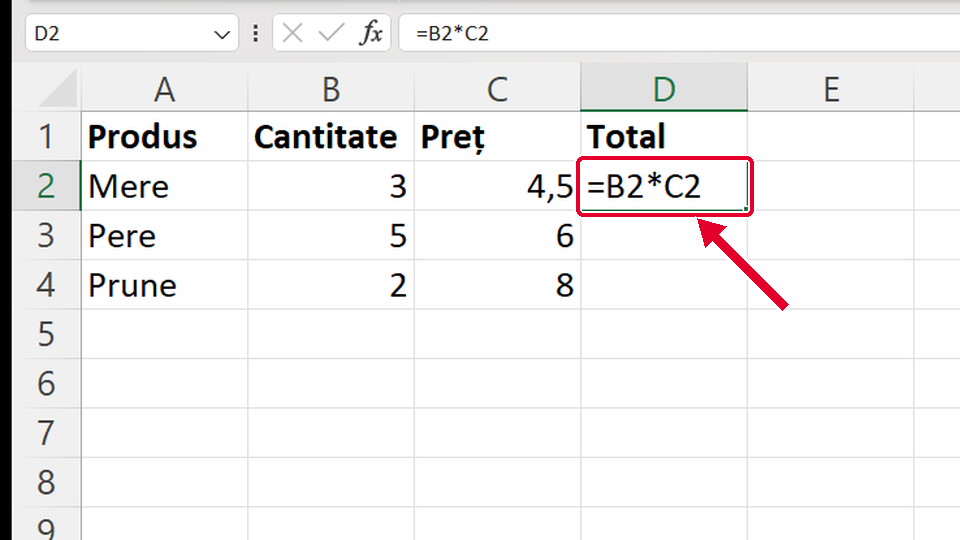
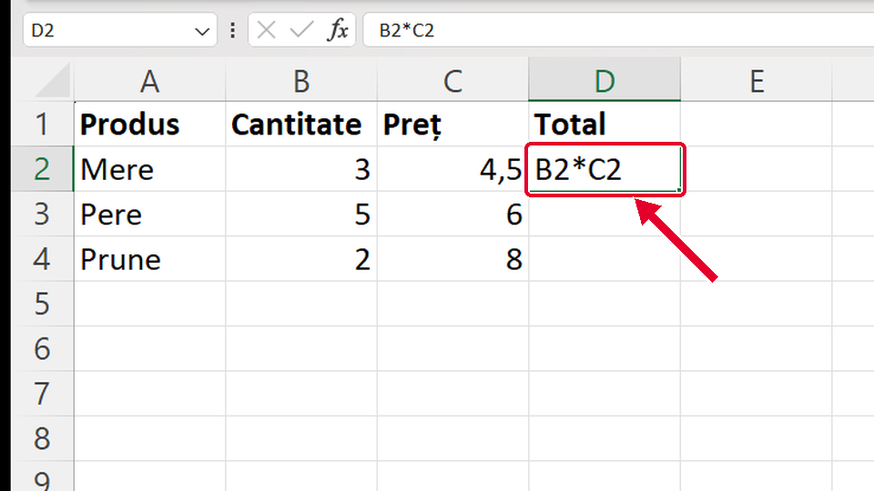
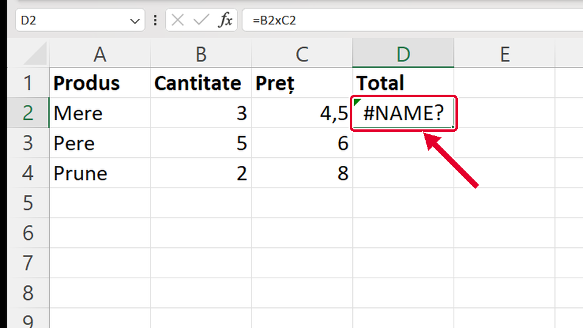

Început
Cum scrii o formulă
Taste: Spațiu = pauză / continuă · ← și → = pasul anterior / următor. Poți apăsa și pe film.

Legat de asta
Se deschid într-o filă nouă, ca să nu pierzi filmul de aici.
- ApoiCopiezi formula în jos ↗
Copiezi aceeași formulă =B2*C2 în rândurile de dedesubt, fără s-o mai scrii.
- ApoiMedia cu funcția AVERAGE ↗
O formulă poate folosi o funcție: media notelor cu AVERAGE.
- Altă caleSuma cu un singur buton ↗
Pentru adunare, Excel scrie singur formula: butonul Σ Însumare automată (AutoSum).
Dacă nu-ți iese
Alege ce vezi pe ecran.
Ai scris formula corect, cu =, dar în celulă rămâne scris =B2*C2.

De ce: Celula are formatul Text (dinainte). Într-o celulă de tip Text, Excel păstrează tot ce scrii ca text, chiar și o formulă.
Ce faci:
- Selectezi celula.
- Pe fila Pornire (Home), în lista cu formatul numărului, alegi General.
- Dai clic pe celulă, apeși F2 și apoi Enter: abia acum Excel calculează.
Taste: F2 · Enter
În celulă apare textul B2*C2, nu rezultatul.

De ce: Ai uitat semnul = la început. Fără =, Excel crede că e un text oarecare și îl scrie așa cum e.
Ce faci:
- Dai clic pe celulă.
- Scrii din nou formula, cu = la început: =B2*C2.
- Apeși Enter.
Taste: Enter
În celulă apare #NAME? (eroare de nume).

De ce: Ai scris x în loc de *. Pentru Excel, B2xC2 e un nume pe care nu-l cunoaște. Înmulțirea se scrie cu steluța *.
Ce faci:
- Dai clic pe celulă și apeși F2 (sau scrii formula din nou).
- Pui * în loc de x: =B2*C2.
- Apeși Enter.
Taste: F2 · Enter